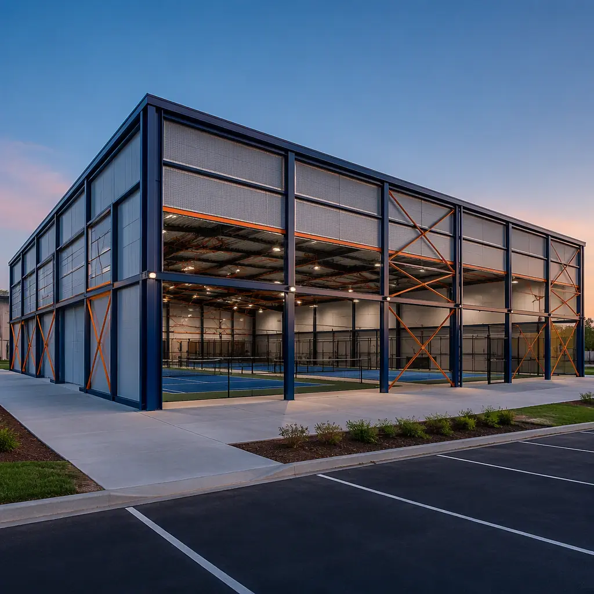
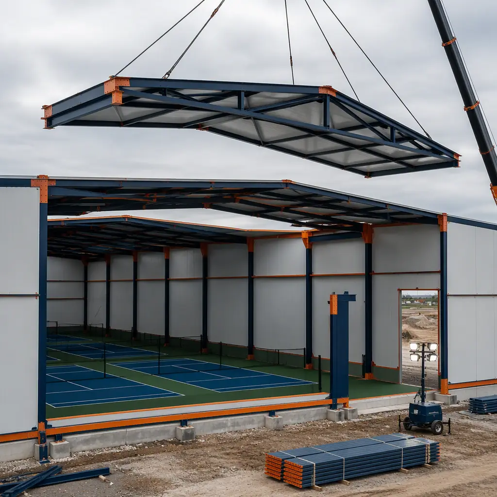
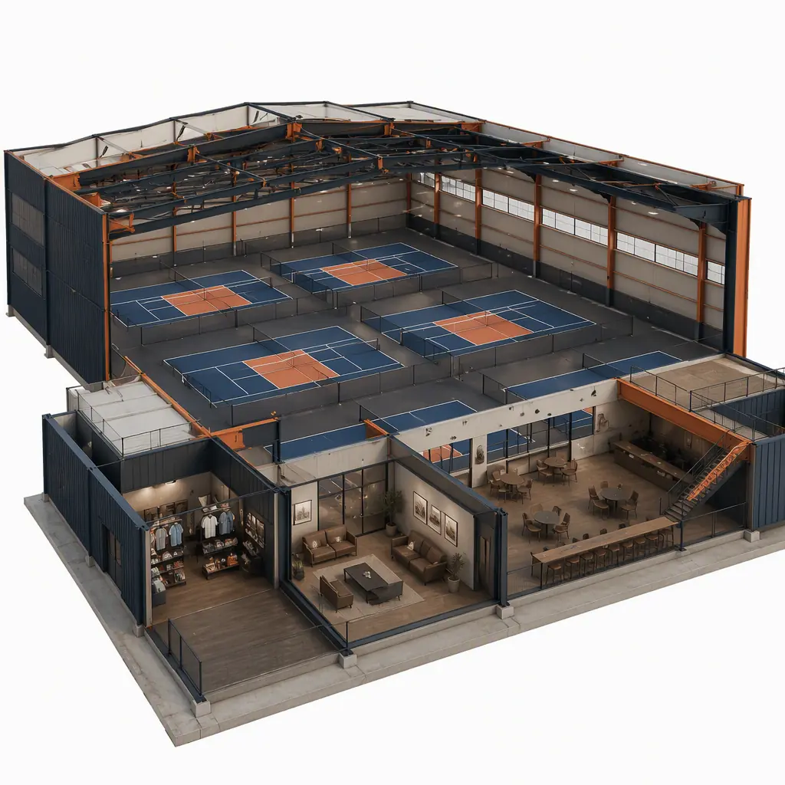
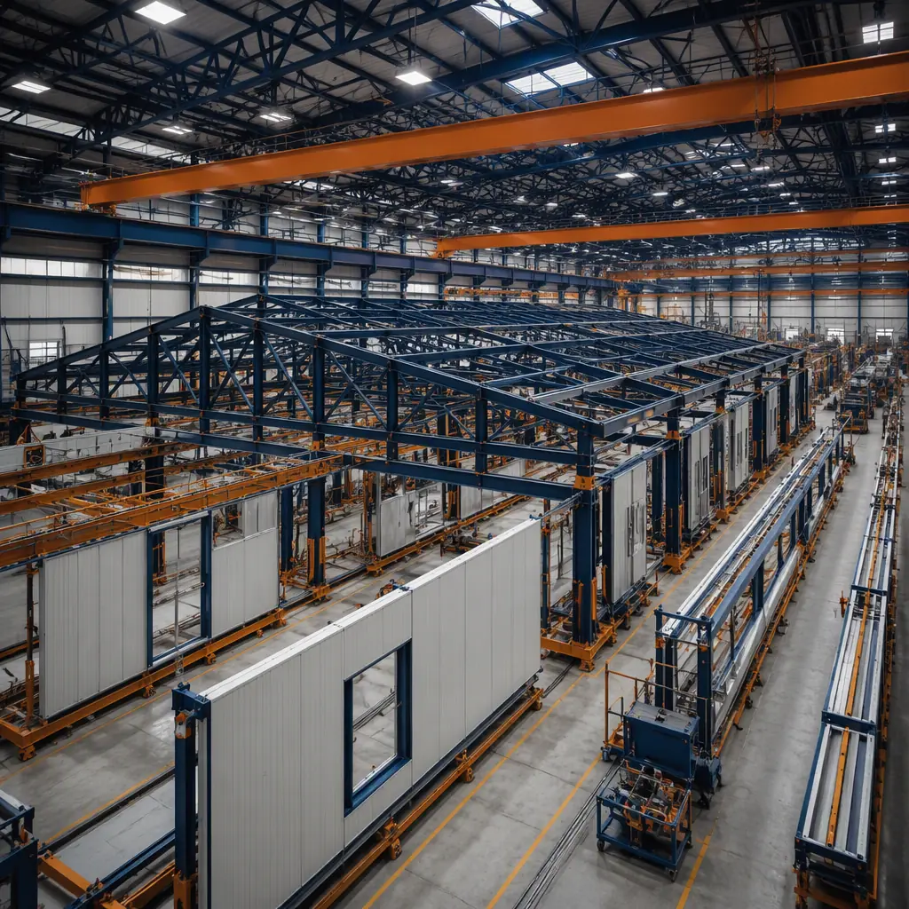

Pickleball is the fastest-growing sport in the United States, and its infrastructure is struggling to keep up. Participation grew from roughly 4.8 million players in 2022 to more than 13.6 million in 2025 — a nearly threefold increase in three years — while court supply lags badly: the USA Pickleball Association estimates the country needs more than 30,000 new courts to meet current demand, and indoor court capacity in cold-climate markets is the scarcest segment of all. For developers and operators, the math is compelling: indoor pickleball clubs run 50–80% occupancy in year one, membership models generate recurring revenue, and a 10-court indoor club can reach payback in 3–5 years. The obstacle has been construction cost and schedule — conventional steel buildings for multi-court facilities run 9–14 months. Modular prefabricated construction manufactures indoor court buildings as factory-built steel-frame modules — clear-span court halls, lobby and pro shop modules, and player amenity modules produced concurrently — compressing delivery to 5–8 months. The same large-span manufacturing model that accelerates modular sports stadiums and arenas applies at pickleball facility scale.

Why Indoor Court Supply Is the Bottleneck
Pickleball demand is concentrated where play is possible year-round, and that is exactly where supply is tightest:
- Seasonality drives the indoor premium. In northern markets, outdoor play runs 5–6 months, and clubs with indoor courts command 2–3x the court rental rates of outdoor facilities. The same seasonal economics that drive modular ice rink construction apply to indoor pickleball.
- Court dimensions are standardized. A regulation pickleball court is 20×44 ft, and typical indoor facilities group courts in 4, 6, or 10-court configurations. The standardization makes the building program ideal for modular production — court halls repeat the same clear-span module with predictable structure, HVAC, and lighting loads.
- Conversion of existing space is limited. Tennis clubs, retail big-box spaces, and warehouses convert only a fraction of the needed capacity, and converted floors rarely deliver the dedicated HVAC, acoustic, and surface quality players expect. Purpose-built modular facilities close the quality gap while retaining the speed advantage of prefabrication.
- Developer returns are proven. Indoor pickleball clubs average $30–$60 per square foot in revenue across court rentals, memberships, programming, and F&B — among the highest revenue densities in recreational real estate, comparable to modular gym and fitness center construction.


What Gets Factory-Built — The Pickleball Facility Module Package
The modular pickleball facility divides into repeatable modules that can be manufactured, fitted out, and shipped independently, then combined on site:
Clear-Span Court Hall Modules
The core of the facility is the court hall: a column-free steel-frame structure sized for 4, 6, or 10 regulation courts (a 6-court hall is typically 12,000–14,000 sq ft; a 10-court hall 20,000–24,000 sq ft). Clear-span roof modules with integrated steel trusses eliminate interior columns, and the structure is engineered for the suspended acoustic panels and LED sports lighting that court play requires. The large-span engineering parallels modular convention and event centers.
Lobby, Pro Shop, and Player Amenity Modules
The revenue and hospitality layer — lobby and check-in, pro shop with paddle and apparel retail, player lounge, and viewing mezzanine — arrives as finished modules with millwork, glazing, and AV pre-installed. These modules generate the memberships and F&B sales that drive club economics, using the retail fit-out discipline from modular retail construction.
Lockers, Restrooms, and Wet Modules
Locker rooms and public restrooms arrive as factory-built wet modules — the same prefabricated plumbing technology used in modular bathroom pods and wet rooms — with plumbing, ventilation, and finishes installed and pressure-tested off-site, eliminating a major source of field delays.
HVAC, Mechanical, and Equipment Modules
Indoor courts need dedicated ventilation, heating, and cooling sized for 8–12 ft of clearance and high occupancy. Mechanical modules arrive with air handling units, ductwork, and controls factory-installed, connected on site in days — the MEP integration discipline documented in modular MEP systems integration.

Court Surface, Acoustics, and Lighting — The Play-Quality Package
What separates a great pickleball facility from a converted warehouse is the play experience, and modular construction controls all three variables at the factory:
- Court surface systems. Modular facilities install the same cushioned acrylic or modular tile court surfaces used in permanent buildings, over factory-leveled subfloors — eliminating the slab flatness problems that plague retrofits. Surface tolerance is held to within ⅛ in over 10 ft, the standard required for tournament play.
- Acoustic control. Pickleball's hard paddle impact produces noise levels of 70–90 dB at the source. Court halls are fitted with factory-installed acoustic absorption — the same STC-rated panel systems documented in modular building acoustics — reducing reverberation times to 1.0–1.5 seconds for a comfortable playing and spectating environment.
- Sports lighting. LED sports lighting systems with 50–75 footcandles at court level, factory-mounted and pre-aimed, eliminate the field coordination and rework that extend conventional sports building schedules. The lighting and controls integration follows modular smart building technology.
Cost Structure — Modular vs. Conventional Indoor Court Building
| Cost Category | Conventional (14,000 sq ft, 6 Courts) | Modular (14,000 sq ft, 6 Courts) |
|---|---|---|
| Structure & envelope | $1.4–2.1M | $1.1–1.6M (factory clear-span) |
| Court surfaces (6 courts) | $180K–300K | $180K–300K (same systems) |
| Lobby, pro shop & amenities | $0.8–1.3M | $0.6–1.0M (factory fit-out) |
| Locker rooms & wet areas | $0.4–0.7M | $0.3–0.5M (factory wet modules) |
| HVAC, lighting & MEP | $0.9–1.4M | $0.7–1.1M (factory-installed) |
| Total Building Cost | $3.7–5.8M | $2.9–4.5M |
The 20–30% building cost reduction compounds with 3–6 months of earlier revenue: at $30–$60/sq ft annual revenue density, a 14,000 sq ft club generates $420K–$840K per year, so every month of schedule compression is worth $35K–$70K. For a full treatment of modular project economics, see our 2026 modular cost guide and our developer's ROI analysis.
Delivery Models — Greenfield Clubs, Additions, and Relocatable Courts
Pickleball facility projects follow three distinct delivery models, and modular construction fits each:
- Greenfield indoor clubs. The fastest-growing model: a purpose-built 6–12 court indoor club on a suburban site, delivered as a module package over 5–8 months versus 9–14 months conventionally, letting operators capture market demand before competitors. The greenfield economics follow our modular project timeline analysis.
- Additions to existing recreational facilities. Tennis clubs, community centers, and fitness facilities add pickleball halls as modular annexes, connecting to existing utilities and amenities. The addition model is documented in modular building additions and expansions.
- Relocatable and seasonal courts. Covered outdoor courts and relocatable court halls serve seasonal demand — deployed for a summer season, relocated, or converted to other uses. The relocatable-building experience from modular temporary and relocatable facilities applies directly.
Compliance — Assembly Occupancy, Accessibility, and Code
Indoor pickleball facilities typically fall under IBC Assembly occupancy (A-4 for spectator areas, with supporting mercantile and business uses), with accessibility requirements per ADA covering courts, viewing areas, and amenities, and with the mechanical design following ASHRAE 62.1 ventilation rates for high-occupancy recreation spaces. Modular delivery supports compliance by building to the same codes in a factory environment with third-party inspections at each production stage — the compliance approach we outline for permitting and zoning in modular construction, and the accessibility program in our ADA compliance guide.
Is Modular Right for Your Pickleball Project?
Modular pickleball facility delivery delivers the strongest value when speed-to-market is the business case — and in the current demand environment it almost always is: markets are being captured by the first operator to open, and every month of schedule is a month of uncontested revenue. It also fits constrained sites where prefabrication reduces staging, multi-site club rollouts where production-line repeatability cuts design cost per facility, and seasonal operators needing relocatable capacity. For a flagship tournament venue with complex spectator programs, a hybrid approach — modular court halls with conventional spectator and hospitality wings — delivers most of the schedule and quality benefits while preserving design freedom. For developers entering the indoor pickleball market, modular delivery converts the facility from a year-plus project into a 5–8 month program — consistent with the modular aquatic and recreation center programs we document elsewhere.